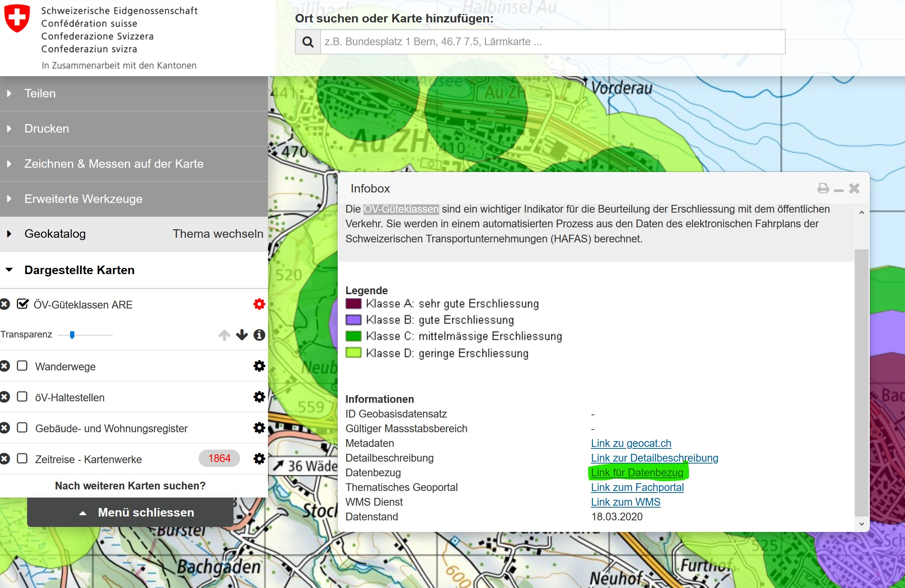

Aufgabe 6: ÖV-Güteklassen¶
Übung 6.1: Datensatz Clippen und betrachten¶
Als weiteres Kriterium wollen Sie eine gute Erschliessung mit dem öffentlichen Verkehr. Dabei geht um den ÖV-Anschluss unter Berücksichtigung des elektronischen Fahrplans. Dafür hat das ARE einen Datensatz herausgeben, den Sie hier auffinden können: https://s.geo.admin.ch/7e80a8bd28
Laden Sie den Datensatz „ÖV-Güteklassen ARE“ herunter und importieren Sie ihn in Ihr Projekt.
Tipp zum Herunterladen!

Der Link zum Datensatz befindet sich in der readme.txt Datei
Clippen Sie den Datensatz mit der Gemeindegrenze von Wädenswil. Symbolisieren Sie den Datensatz anhand des Feldes „KLASSE“ und betrachten Sie anschliessend die Attributtabelle.
Übung 6.2: Buchstaben in nummerische Kategorien überführen¶
Da es sich bei den Klassen um Buchstaben handelt, können wir sie für unsere Analyse in dieser Form nicht verwenden. Wir müssen die Buchstaben noch in Zahlen konvertieren (A zu 1, B zu 2 usw.). Verwenden Sie hierfür den Field Calculator der Attributtabelle. Versuchen Sie die Konversion Buchstaben in Zahlen mit einer if() Funktion um zu setzen. Falls sie nicht weiter kommen finden Sie weiter unten einen Lösungsvorschlag.
Hinweise:
Bevor Sie die Funktion anwenden können müssen Sie noch den „Output field name“ definieren.
Sobald sie den Field Calculator ausführen wechselt QGIS in den Editiermodus. Änderungen werden nur gespeichert, wenn die Editiersession beendet wird.
Wenn sie im mittleren Bereich auf unter „Fields and Values“ auf ein Feld klicken haben sie rechts die Möglichkeit, die Werte dieser Felder zu betrachten und ebenfalls mit Doppelklick in ihre Formel zu übernehmen.
Abb. 11 Zur Erinnerung: Der Field Calculator besteht aus drei Bereichen: Im mittleren Bereich können Sie Funktionen sowie Felder der Attributtabelle suchen und mittels einfachem anklicken Hilfestellung erhalten (rechts). Mittels doppelklick wird die Funktion oder die Feldbezeichnung in den „Function Editor“ (links) übertragen. Hier wird die eigentliche Funktion zusammengebaut die ausgeführt werden soll.¶
Lösung der if-Funktion
if("KLASSE" = 'A' ,1,
if("KLASSE" = 'B' ,2,
if("KLASSE" = 'C' ,3,
if("KLASSE" = 'D' ,4,0)
)
)
)
Übung 6.3: Polygon in Raster konvertieren¶
Konvertieren Sie das Polygon nun in ein Raster mit dem SAGA-Werkzeug „Rasterize“. Führen Sie das Tool mit Verweis auf die neu erstellte Spalte unter „Attribute“ sowie der Zellgrösse 25 (Meter) aus. Falls das Tool nicht ausgeführt wird: lesen sie die Fehlermeldung und versuchen sie die Anweisung zu befolgen.
Beachten Sie, dass nun alle Bereiche in Wädenswil, die keiner Kategorie zugewiesen waren nun keinen Wert erhalten haben. Für unsere Abstufung bräuchten wir hier aber den Wert „5“ (1 – 4 haben wir bereits zugewiesen). Benutzen Sie das Tool „r.null“ um alle Null Werte in 5 zu konvertieren („the value to replace the null value by“).
Clippen sie den Output anschliessen mit dem Werkezeug „Clip raster by mask layer“. Aus bisher unerklärlichen Gründen werden nach diesem Schritt 0-Werte erzeugt (alle Bereiche innerhalb des Raster-Extent aber ausserhalb des Polygons). Diese sollten aber NULL sein, nicht 0. Führen Sie deshalb das Tool „r.null“ nochmals aus und setzen Sie bei „List of cell values to be set to NULL“ den Wert 0 ein.
Speichern Sie den Output mit dem Namen oev_raster.tif in ihrem Projektordner und gruppieren Sie alle Layers im Zusammenhang mit den ÖV-Güteklassen.